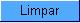

Filtrar
Exceções de Leituras e Consumos
Aba
Ligações e Consumo
Esta
tela permite que
você informe os parâmetros para filtrar os
imóveis com exceções de leituras e/ou
consumos no mês.
Em
função da quantidade de parâmetros
disponíveis para o usuário efetuar o filtro, e com
o objetivo de tornar a operação mais
amigável, a tela foi
dividida em três abas, a saber:
- Localização:
Nesta aba estão agrupados os parâmetros
relacionados com a localização do
imóvel.
- Característica: Nesta
aba estão agrupados os parâmetros relacionados com
as características do imóvel.
- Ligações
e Consumos: Nesta aba estão agrupados
os parâmetros relacionados com as anormalidades de leituras e
consumos.
As telas do
tipo aba têm um comportamento padrão. Clique aqui
para obter uma explicação mais
detalhada do
funcionamento das telas do tipo aba.
Agora, nós vamos ver a ajuda para a aba
"Ligações e Consumo".
Para ter acesso à ajuda das demais abas, clique no "link"
correspondente, na sessão "Tópicos
Relacionados".
Preenchimento
dos campos
Informar,
pelo menos, um dos parâmetros de pesquisa relacionados
abaixo, ou nas outras abas do processo de filtro.
Nesta tela, o campo "Tipo de Anormalidade"
está relacionado com os campos "Anormalidade de Leitura
Informada", "Anormalidade
de Leitura Faturada" e "Anormalidade de Consumo". Ou seja, ao
selecionar o "Tipo de Anormalidade" o sistema habilitar um dos outros
tres campos, dependendo do tipo de anormalidade selecionado.
- Tipo de Anormalidade: Selecione,
na lista apresentada, o tipo de anormalidade, para a qual, que
deseja filtrar exceções
de leitura e/ou consumo. Ao selecionar o tipo de anormalidade o sistema
irá habilitar um dos campos relacionados abaixo, dependendo do
tipo de anormalidade selecionado.
- Anormalidade de Leitura Informada: Este
campo só será habilitado caso você tenha
selecionado, no campo "Tipo de Anormalidade", o tipo de anormalidade
correspondente. Caso seja este o caso, então selecione, na lista
apresentada, a anormalidade de leitura informada, para a qual,
deseja filtrar exceções
de leitura e/ou consumo.
- Anormalidade de Leitura Faturada: Este campo só será habilitado caso você tenha
selecionado, no campo "Tipo de Anormalidade", o tipo de anormalidade
correspondente. Caso seja este o caso, então selecione, na lista
apresentada, a anormalidade de leitura faturada, para a qual,
deseja filtrar exceções
de leitura e/ou consumo.
- Anormalidade de Consumo: Este campo só será habilitado caso você tenha
selecionado, no campo "Tipo de Anormalidade", o tipo de anormalidade
correspondente. Caso seja este o caso, então selecione, na lista
apresentada, a anormalidade de consumo, para a qual,
deseja filtrar exceções
de leitura e/ou consumo.
- Consumo Faturado Mínimo: Informe
este campo, caso deseje filtrar imóveis com
exceções de leitura e consumo que tenham o consumo faturado maior, ou igual ao valor informado neste campo.
- Consumo Medido Mínimo: Informe
este campo, caso deseje filtrar imóveis com
exceções de leitura e consumo que tenham o consumo medido maior, ou igual ao valor informado neste campo.
- Consumo Médio: Informe
este campo, caso deseje filtrar imóveis com
exceções de leitura e consumo que tenham o consumo médio maior, ou igual ao valor informado neste campo.
- Caso você tenha informado um
tipo de medição na aba "Característica", o sistema
irá considerá-lo na hora de selecionar os imóveis.
- Entretanto, caso
você não tenha informado um tipo de medição
na aba "Característica", o sistema irá
determiná-lo de acordo com os seguintes critérios:
- Para os imóveis que
possuem hidrômetro na ligação de água, o
sistema irá assumir o tipo de medição "Ligação de Água".
- Para os imóveis que
não possuem hidrômetro na ligação de
água, mas possuem hidrômetro na saída do
poço, então o sistema irá assumir o tipo de
medição "Poço".
- Os imóveis que não
estiverem enquadrados em nenhum dos critérios relacionados
acima, serão descartados para efeito do cálculo do
consumo médio do hidrômetro.
Funcionalidade
dos botões:
As telas do tipo aba apresentam
dois tipos de
botões, que são separados por uma linha
horizontal.
Os botões que estão acima da linha horizontal,
estão relacionados com a navegação
entre as abas,
e, os botões que estão abaixo da linha
horizontal,
têm efeito sobre todas as abas.
|
Botão
|
Descrição
|

|
Utilize
este botão para limpar todos os campos da aba. |
|
|
Estes
botões
estão na parte superior da linha horizontal, e devem ser
utilizados para que o sistema retorne à aba anterior. |
 |
Utilize
este botão para fazer com que a tela volte ao seu estado
inicial de exibição. |
 |
Utilize
este
botão para fazer com que o sistema encerre, sem salvar o
que
está sendo feito, e volte para a tela principal. |
|

|
Utilize
este botão
para solicitar ao sistema a realização do filtro
das exceções de leituras e/ou consumos, de acordo com os
argumentos de pesquisa
informados. |
Tela
de Sucesso:
O sistema apresentará
a tela "Dados para
Análise da Medição de Consumo"
com a
relação dos imóveis
com exceções de leituras e/ou consumo
selecionados pelo filtro.
A matrícula do imóvel é apresentada
com um "hyperlink" para ativar a tela:
Tópicos
Relacionados: